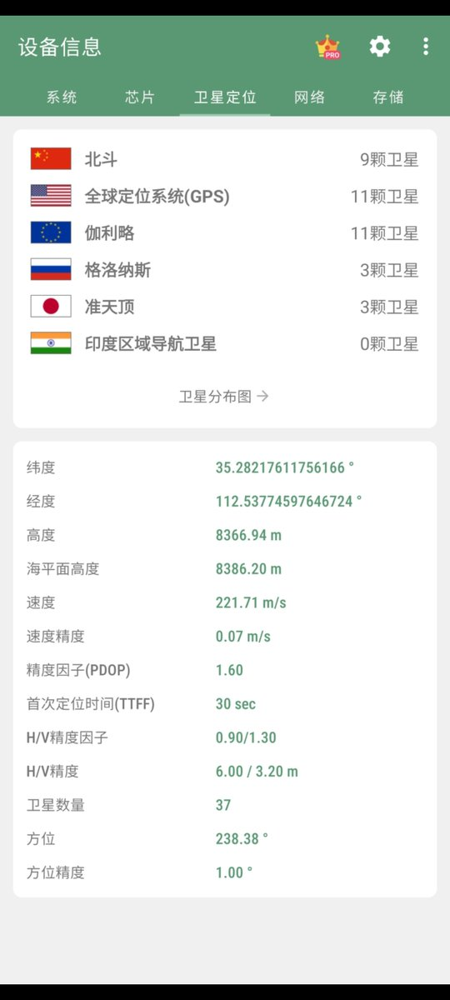

猫屎bot
@wind_dmr
@nishuang 作弊？不需要的（不是

倪爽
@nishuang
推友开发的小红书海拔打卡神器，设计思路特别有意思
我本能地以为先自拍，app 再给照片叠加当地海拔 - 既有美片、又有现场美景、还有海拔高度，多装逼啊 ~
没想到实际是把手机当手牌抓在手上，旁边的人拍你、现场美景、海拔高度…装逼程度、好玩程度都立马翻倍😂
开发难度还至少降了一半 https://t.co/QN4QCGMQtp